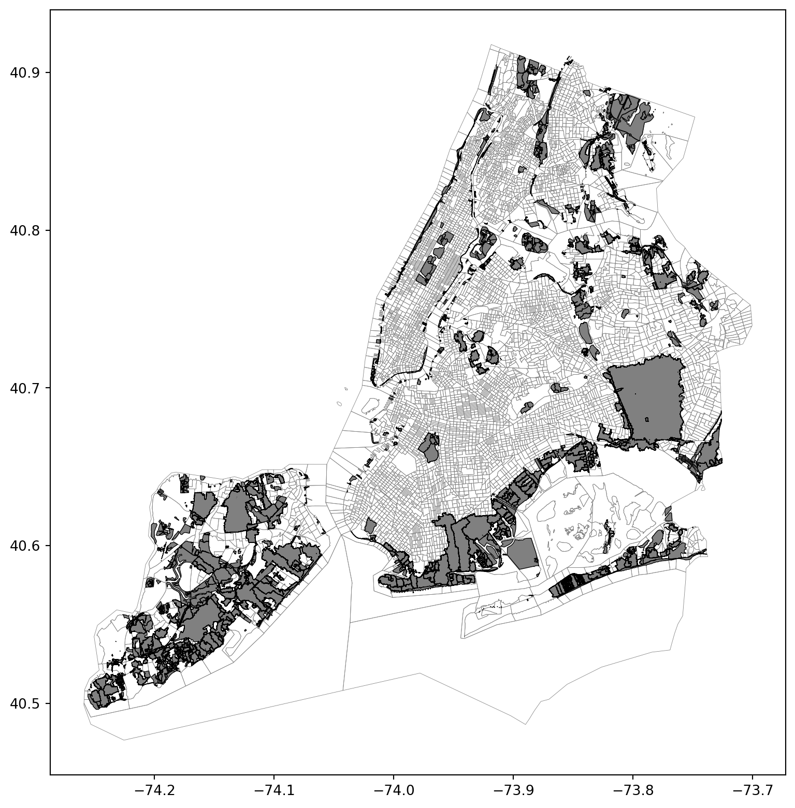

Our assessment consists of three sub-layers: Existing Green Infrastructure, Existing capacity for development and Existing vegetation coverage. The Right of Way Green Infrastructure is a project of NYC, which regularly receives grants for extension and maintenance. Green infrastructure collects stormwater from streets, sidewalks, and other hard surfaces before it can enter the sewer system or cause local flooding. By reducing the amount of stormwater that flows into the Sewer System, green infrastructure helps prevent Sewer Overflows and improves the health of local waterways (NYC DEP, 2022). The dataset consists of three types of ROW GI, which are retention, storage and infiltration. Each of them is assigned a different weight and spatial density is calculated before normalization. The weight is generated from residents’ responses to DEP, as residents tend to complain about low-capacity GI in workshop sessions.
Capacity redundancy for development is a factor reflecting the ability of an area to be densified and diversified. Zoning code and housing unit density combined with vacancy rate are used to calculate the basic raster layer (AHS, 2021), which will be added to a normalized cost distance analysis of bus and train accessibility. The current vegetation coverage is a combination of land cover data and NDVI values, showing the ability to adapt to extra amounts of water. These criteria are developed with panel discussion results.
Subsurface Detention Systems with infiltration capability provide temporary storage of stormwater runoff underground. These systems have an open-bottom and can incorporate perforated pipe and stormwater chambers for added detention volume. Systems are primarily designed with a gravel bed that stores water until it can infiltrate into the ground.
Infiltration Basins are designed to store rain water beneath a surface that closely mimics its surroundings, like grass or concrete. They are similar in functionality to Rain Gardens. The inlet opening on the curb face collects the stormwater, which fills a chamber, or ‘sump.’ Once the sump is partially filled, openings on its walls feed into pipes, which convey the stormwater to an underlying stone layer; the stormwater then seeps into the ground underneath in a process called “infiltration.” Download our Green Infrastructure Infiltration Basin Design.
Stormwater Greenstreets, like Rain Gardens, are planted areas designed to collect and manage stormwater that runs off the streets and sidewalks. However Stormwater Greenstreets are typically constructed in the roadway, are usually larger than rain gardens, and have varying lengths, widths and soil depths based on the characteristics of the existing roadway.
:::  :::
A municipal separate storm sewer system (MS4) is a publicly-owned conveyance or system of conveyances (including but not limited to streets, ditches, catch basins, curbs, gutters, and storm drains) that is designed or used for collecting or conveying stormwater and that discharges to surface waters of the State. Separate storm sewers carry stormwater runoff directly to local waterbodies and serve approximately 30–40% of New York City.
As stormwater flows over streets and other impervious surfaces, it sweeps up pollutants such as oils, chemicals, pathogens, and sediments. In separate sewer areas, this pollution is carried by stormwater and discharged directly into local waterways. This can have a negative impact on water quality and recreational uses.
Kernel Density of each kind of Green Infrastructure is calculated in ArcGIS, then overlaid with Land Cover and MS4 areas rasterized.
Similarly, Transit access are representd by cost distance, which is calculated in ArcGIS with land cover as cost raster. Job assessment and land cover type are also taken into account. These results will be shown in next part, after housing database introduction.